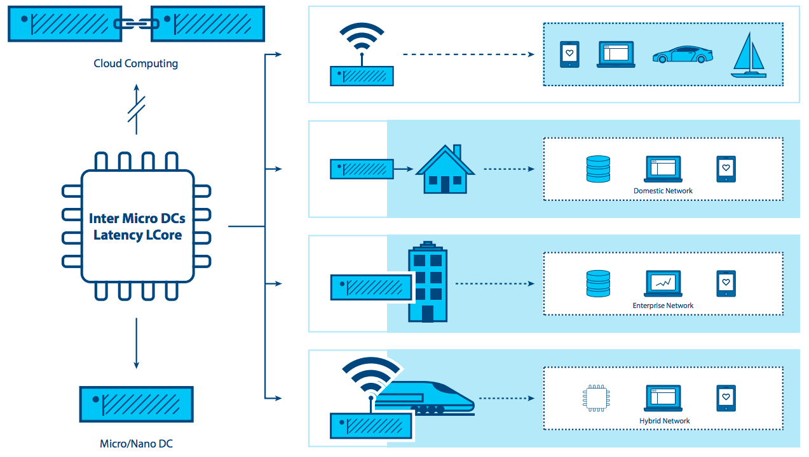

クラウドエッジコンピューティング: データセンターを越えて¶
はじめに¶
この10年間、集中型クラウドコンピューティングは標準的な IT サービスプラットフォームとなっています。クラウドコンピューティングは至る所にありますが、新たな要件や作業負荷に対しては限界が見えてきています。強力なデータセンターの中心的な見解では、コンピューティングとストレージのリソースが比較的豊富で集中化されている場合、サポートするハイパーバイザーと管理プラットフォームのフットプリントの最適化についてはほとんど考えられませんでした。信頼性の低いネットワーク接続や帯域幅が制限されたネットワーク接続でしかアクセスできない制約付きノードをサポートするために必要な要件を真剣に検討しているクラウド開発者は少なく、非常に高い帯域幅、低いレイテンシ、または多くのサイトにわたって広範囲の計算能力を必要とするアプリケーションのニーズを考えていました。
新しいアプリケーション、サービス、コンピューティングタスクは、分散インフラストラクチャを直接サポートするために構築された新しいアーキテクチャをますます要求します。リモートサイトにおける可用性とクラウド機能の新しい要件は、 今日の要件（小売データ分析、ネットワークサービス）と明日のイノベーション（スマートシティ、AR / VR ）の両方をサポートする必要があります。進化する要求に対応するためには、クラウドの成熟度や堅牢性、柔軟性、およびシンプルさを複数のサイトやネットワークに拡張する必要があります。
企業は最近、複数のサイトとネットワークにまたがった分散インフラに対して、シンプル化された管理とクラウドコンピューティングアーキテクチャの柔軟性を適用してきました。組織は、 WAN ネットワーク全体にまたがってクラウド機能を活用し、ネットワークエッジにおける適用をますます小規模にしたいという新しいニーズを持っています。このアプローチは初期段階にありますが、多くの新しいユースケースとシナリオが分散アーキテクチャから恩恵をうけるようになるのは明らかでしょう。
このペーパーでは、私たちはこの新しいニーズを調査します。このニーズは分散クラウドや fog computing,、第4世代データセンターといった多くの名前を持ちますが、このドキュメントの目的にかなうため、私たちは共通で簡単に理解できる用語であるクラウドエッジコンピューティングという言葉を使います。
Edge Computing Group はこのクラウドコンピューティングの変革を、大変刺激的だと見ていますが、一方で OpenStack の機能はクラウドエッジコンピューティングをサポートするには初期段階であるということも認識しています。OpenStack Summit Boston で確認された初期のコミュニティの関心に基づいて、2017年9月に2日間のワークショップが開催され、200人以上のユーザーと開発者が関連するユースケースを定義し、それらをサポートするために必要なツールやアーキテクチャを検討するというハードワークを開始しました。概念実証が実行され、コミュニティは早期のデプロイメントをいくつか行いました。Edge Computing Group は、完全な機能を持ったエッジコンピューティングクラウドインフラについて、基礎要件を記述するという挑戦を現在行おうとしています。
このドキュメントでは、私たちは幾つかの重要なタスクを達成することを狙っています。
- いくつかの基本的な定義を含む、クラウドエッジコンピューティングの周りの会話を掘り起こし、オープンソースコミュニティーの関心と関わりを刺激します。
- 幅広い活用のため必要とされるツールと標準の開発について、より広いオープンソースとOpenStack双方のコミュニティを導きます。
- この分散型クラウドモデルに対応するために、現在のツールや標準、アーキテクチャをどのように変更する必要があるかを調べます。
私たちの目標を達成するためには多くの作業が必要です。オープンソースコミュニティ全体が、クラウドエッジコンピューティングの新しい要件を満たすためツールを作成し、適用する努力と機会の両方に加わることを歓迎し、奨励します。
エッジコンピューティングとは？¶
エッジコンピューティングの定義には多くの重複と、時にはいくつか矛盾が存在するということは強調する価値があります。—エッジコンピューティングの意味は人によって様々です。エッジコンピューティングのもっとも成熟した見方は、アプリケーション開発者とサービス提供者に対し、クラウドコンピューティング機能と同様の IT サービス環境をネットワークのエッジに提供することです。
その狙いは、コンピューティング、ストレージ、帯域幅をデータ源やエンドユーザーの近くで提供することです。エッジコンピューティング環境は、全サイト間の潜在的な高遅延と信頼性の低い小さな帯域幅に特徴付けられます。さらに、一般的なデータセンターの集中型クラウドリソースでは提供することができない、特有のサービス配信とアプリケーション機能の可能性にも特徴付けられます。処理機能の一部または全部をエンドユーザーまたはデータ収集ポイントに近づけることによって、アプリケーション上の遅延影響を最小限に抑える効果により、広域分散の影響を抑制することができます。
エッジコンピューティングは、WAN ネットワーク上でネットワークサービスを仮想化することによって初めて登場し、データセンターから離れる一歩を踏み台ました。初期のユースケースは、クラウドコンピューティングユーザーが使い慣れた柔軟でシンプルなツールを提供するプラットフォームを使いたいという要望によって推進されました。
新しい形のエッジコンピューティングが登場するにつれて、コンピューティングへの見方が変わりつつあります。もはや集中的なデータセンターを構築する必要性に縛られることはありません。代わりに一部のアプリケーションでは、エッジコンピューティングが仮想化とクラウドコンピューティングの知見を活用し、数千台規模の数を潜在的に持つ分散ノードを持つことで様々なユースケースに対応する可能性を生み出しています。例えば、産業用の IoT や、リアルタイムで水資源の使用量を数千、数百万の場所で監視するネットワークなどです。
分散クラウドに依存することなく、独自開発もしくはオープンソースのエッジコンピューティングが既に存在しています。いくつかのベンダーはこれを「デバイス・エッジ」と呼んでいます。この手法のコンポーネントには IoT ゲートウェイや NFV アプライアンスが含まれています。しかし、アプリケーションはクラウドの様々な機能をエッジに必要としますが、分散型エッジインフラを構築するためのツールやアーキテクチャーはまだ初期段階です。我々は、市場がエッジコンピューティングに対して優れた機能を求め続けると考えています。
エッジコンピューティングの能力は、限定されてはいませんが次のようなものがあります。
- 多様性のあるインフラをまたいだ、一貫性のある運用の枠組み
- 極めて分散された環境 (世界中に数千のロケーション) 上で処理する能力
- 世界中に分散された遠隔地に存在するカスタマー向けにネットワークサービスを提供するニーズ
- アプリケーションのインテグレーションとオーケストレーション、そしてサービス提供の要件
- ハードウェア限界とコスト制約
- 限定的、あるいは間欠的なネットワーク接続性
- (AR/VR や音声、さらにそれ以上のための) 厳しい低遅延要件に従ったアプリケーション配置方法
- ジオフェンシングや重要なプライベートデータをローカルに保存するための要件
エッジコンピューティング検討のより深い説明¶
エッジコンピューティングにおける「エッジ」とは、分散されたデータ源やエンドユーザに可能な限り近い、管理ドメインの外の領域を示します。このコンセプトは通信事業者のネットワークや、小売業のような分散した出張所を抱える大規模エンタープライズ、もしくはその他の、特に IoT の文脈で語られるアプリケーションに当てはまります。
{kind=link}
エッジコンピューティングの特徴の一つに、アプリケーションはエッジの位置に強く結びついているということがあります。通信事業者にとって「エッジ」とは、エンドユーザーに近くありつつもプロバイダが制御できる場所を示すでしょうし、潜在的にはエンドユーザーの持つ機器上で動作するワークロードという要素も含むでしょう。大規模エンタープライズにとっては、アプリケーションやサービスまたはワークロードが利用される場所（例として小売店や工場）のことを示します。この定義の目的からいうと、 IoT やセンサー機器のように、最小のクラウドアーキテクチャをサポートするためだけに極端に能力を制限された終端機器はエッジではありません。エッジコンピューティングに絡む議論の多くが、この差異を明確にしていないため、このことは熟慮すべき事項です。
以下のような点でエッジコンピューティングは、データセンターコンピューティングと類似しています。
- エッジコンピューティングは、コンピュート、ストレージそしてネットワークといった資源を含みます。
- エッジコンピューティングの資源は、多くのユーザやアプリケーションに共有されるかもしれません。
- エッジコンピューティングの恩恵は、資源プールの仮想化や抽象化により生み出されます。
- エッジコンピューティングの恩恵は、コモディティ・ハードウェアを利用する能力により生み出されます。
- エッジコンピューティングは、相互運用性をサポートするため API を利用します。
エッジコンピューティングは、大規模データセンターのコンピューティングと次のような違いがあります。
- エッジサイトは、可能な限りエンドユーザに近づけます。これにより、高い遅延や信頼できないコネクションを克服し、ユーザ体験を改善します。
- AR/VR 機能用の GPU/FPGA プラットフォームのように、特別なハードウェアが必要かもしれません。
- エッジは、異なる位置に分散された多数のサイトへ拡張することが出来ます。
- エッジサイトの場所と、終端アクセスリンクの同一性は重要です。ユーザーの近くで実行すべきアプリケーションは、エッジの確かな場所に存在すべきです。これは、エッジコンピューティングにおけるアプリケーション配置の共通課題です。
- サイトの全体プールは動的に考慮されるべきです。サイトの物理的な隔離のため、エッジサイトは往々にして互いが接続され、またWAN接続によりコアと接続されるでしょう。エッジサイトは、インフラストラクチャプールに何度も参加したり、離脱したりするでしょう。
- エッジサイトは遠隔地にあり、潜在的に遠隔操作される可能性があります。それ故に遠隔管理されるべきです。
- エッジは、データセンターほどの大きさから1台の装置に至るまで、サイトの大きさやスケールの多様性をサポートします。
- エッジサイトは、資源の制限を受けるかもしれません。既設サイトへの容量追加は、スペースや電力の要件により制約を受けます。
- ユースケースによっては、特大の規模におけるマルチテナンシーも求められます。
- データセンタークラウドからエッジコンピューティングを隔離することは、「外部クラウド」がセキュリティ侵害を受けたときも、サービス影響を出さないことを確実にするために必要となるかもしれません。
エッジコンピューティングのコンセプトは、エッジサイト (例としてコンピュート、ネットワークやストレージのインフラストラクチャ) だけでなく、エッジサイト上で実行されるアプリケーション (ワークロード) の双方をカバーすべきです。エッジコンピューティング環境におけるどんなアプリケーションも、クラウドが提供する機能ーすなわちコンピュート、ブロックストレージ、オブジェクトストレージ、仮想ネットワーク、ベアメタルやコンテナといった機能のいくつか、あるいは全てを潜在的に利用しなければ価値がないのです。
エッジコンピューティングをクラウドコンピューティングから分別する、必要不可欠な特徴とは次のようなものです。
- 潜在的かつ後半に分散された複数のサイトの動的プールをサポートする能力
- 潜在的に信頼できないネットワークコネクション
- ネットワーク間をまたぐサイトにおいてリソース制限が解決困難となる可能性
特徴とユースケースの探索¶
それではエッジコンピューティングについて、私達が今のところ知る特徴、ユースケース、そしてシナリオはどんなものでしょうか。
クラウドエッジコンピューティングを前に推し進める典型的なニーズは、ユーザやエンドポイントのデータ源に向かってより近づけようとするサービスデリバリからくるものです。エッジコンピューティング環境はコア容量と結合して動作します。一方でエッジコンピューティングは、不必要なコアとの接続要求を除外し、改善されたユーザエクスペリエンスを提供します。改善の結果は、次のようなものからもたらされます。
- 遅延の削減: エンドユーザに到達するまでの遅延は、コンピュータが遠く離れたところにある場合に比べ、低くできます。ーそしてこれは、例えば反応の良いリモートデスクトップを可能にしたり、好評な AR やより良いゲームを提供します。
- 帯域制限の軽減: ワークロードをエンドユーザやデータ収集ポイントに近づける能力は、サイトにおける帯域制限の効果を削減します。これは、しばしば IoT や NFV を利用する際に見られるように、エッジにあるサービスがコア向けの処理のため大量のデータ転送を行う必要性を削減する場合に特に有用です。データ削減とローカル処理は、反応の良いアプリケーションと、テラバイト級のデータを長距離伝送するコストの削減の両方に転換することができます。
しかし、ここにはトレードオフがあります。エッジコンピューティングを提供するということは、デプロイメント数の莫大な増加が必要不可欠です。このことは、広域に拡散されたエッジのデプロイメントのための重要なチャレンジにつながります。一つのクラウドを 10 チームで運営するとすると、組織は数百あるいは数千の小さなクラウドを協調させれうためどのようにすれば良いでしょうか？いくつかの仕様は次のようなものを含みます。
- 標準化と一貫性が必要とされます。個々の拠点は共通させるべきですし、把握された量にすべきです。
- 運営能力は自動化されるべきです。デプロイメントや移行、そしてどのような回復可能な障害も、シンプルかつ簡単になるべきです。
- シンプルでコスト効率の良い計画は、ハードウェア故障のため必要です。
- 局所的な障害許容設計は、特に遠隔地や到達不可能な環境において重要になるかもしれません。そのような場合、ゼロタッチインフラが望まれます。これは、冗長性を持つハードウェアを購入して稼働させるコストと、障害影響と緊急対応のコストとの対比になります。考慮すべき事項は次のようなものを含みます。
- これらの場所は自給自足する必要があるでしょうか？
- この場所が障害に陥ったとき、オンサイト補修に行けそうな人は誰もおらず、現地に補修部材を備えることはふさわしくないでしょう。
- 障害許容性は必要とされているでしょうか？そしてもしそうであれば、誰かが復旧対応を行えるようになるまでどの程度の時間が許容されるでしょう。2 時間、1 週間、あるいは 1 ヶ月でしょうか？
- 保守性は簡便にすべきものです。習熟していない技術者が、手動で復旧作業や交換作業を行います。一方で遠隔地にいる熟練した管理者は、再インストールやソフトウェア保守を行います。
- 物理設計は完全に考え直す必要があるかもしれません。多くのエッジコンピューティングの環境は理想的にはならないでしょう。制限された電力、塵埃、湿度や振動と言ったものは考慮されるべきです。
ユースケース¶
恐らくユースケースを分類する方法はたくさんあるでしょうし、このペーパーは完全なリストを提供するには短すぎるでしょう。しかし考え方の整理を助けるいくつかの例と、コラボレーションのための重要な機会をここに掲載します。
分散アーキテクチャから利益を受ける主要な4つのワークロードは、分析、法令遵守要件、セキュリティとNFVです。
データ収集と分析¶
IoT は、ここではごく小さなサイトの大きなネットワークから常にデータ収集を行うものを言いますが、エッジコンピューティングから利益を受けるアプリケーションの一例です。大量のデータを、しばしば制約が発生するネットワーク越しに集約型データセンターの分析エンジンに転送することは非効率的でしょう。この方式は恐らくレスポンスが悪いでしょうし、過度な遅延要件が求められるでしょう。さらに貴重な帯域の無駄遣いになります。エッジ装置はテラバイト級のデータを生成することも出来るため、分析機能をエッジ上にあるデータ源に近づけ、データ源近くで分析し、要約された小さな情報だけを集約型システムに送り返すことで、よりコスト効率を上げることが出来ます。この方式は、トレードオフが発生します。すなわちコアにデータを転送するためのコストと、いくつかの情報が失われることのバランスをとることになります。
セキュリティ¶
不幸なことに、携帯ハンドセットや IoT センサを含むエッジ装置の急増により、エンドポイントの急増を利点とする新しい攻撃手法が現れてきています。エッジコンピューティングはセキュリティ要素を攻撃者に近づける能力を提供します。この能力は、セキュリティアプリケーションのより高い性能を実現し、抜け穴やリスクに対するコアの防御を助ける何層もの防御層の数を増やします。
法令遵守要件¶
法令遵守は、広い要件をカバーします。ジオフェンシングから、データ主権、著作権の施行までが含まれます。地理的、あるいは政治的な境界に基づいたデータへのアクセス制限、すなわち著作権の制限に従ってデータストリームを制限したり、特定の規制に従った場所にデータを格納したりすることは、全てエッジコンピューティングインフラを使えば達成可能かつ実施可能です。
ネットーワーク仮想化 (NFV)¶
ネットーワーク仮想化 (NFV) は、本質なエッジコンピューティングアプリケーションの中心的なものです。なぜならエッジコンピューティングは、インフラ機能を提供するからです。通信事業者は彼らのサービス提供モデルをエッジコンピューティングインフラの一部、あるいは最上位レイヤとして仮想ネットワーク機能を動作させることで変革しようとしています。効率の最大化や、コストや複雑さの解消のため、NFV をエッジコンピューティングインフラで稼働させることは意味を持ちます。
リアルタイム¶
リアルタイムアプリケーション、すなわちAR/VR、コネクテッドカー、遠隔医療、ネットワーク経由の触覚通信を使ったインダストリ4.0、そしてスマートシティは、数ミリ秒以上の許容できない遅延があると実現できません。そしてこれらは極めてジッタや遅延の変化に敏感です。例えばコネクテッドカーは、低遅延や広帯域を必要とし、ユーザに近い場所での計算やコンテンツキャッシュに依存するでしょうが、これらの要件を達成するにはエッジ機能が不可欠になります。多くのシナリオ、とりわけ閉じられたループの自動化は、高可用性と数十ミリ秒単位のレスポンスが求められてきましたが、エッジコンピューティングインフラがなくては要件を満たせないものです。
没入型アプリケーション¶
エッジコンピューティングは帯域を拡張し、新しい没入型アプリケーションの潜在的な能力を引き出します。このアプリケーションには、AR/VR、4K ビデオ、そして医療分野における垂直型360°映像といったものが含まれます。エッジでコンテンツのキャッシングや最適化をすることは、TCP のようなプロトコルにとって不可欠です。これは無線ネットワークのトラフィック上で、突然起きる変化のために反応しなくなることがあるからです。エッジコンピューティングインフラは、リアルタイムアクセスと無線やネットワークの情報を結びつけ、繁忙時間帯における動画の欠損と遅延を20%まで減少させることができます。そして無線の状況にもとづいて、動画のビットレートを変化させることも出来ます。
ネットワークの効率性¶
多くのアプリケーションは遅延に敏感ではありませんし大容量で近接したコンピュートやストレージ容量を必要としません。そのため理論的には集約型クラウド上で実行することが可能ですが、帯域とコンピュートあるいはそのうちどれか一つの要件は、依然としてエッジコンピューティングがより効率的なアプローチである余地を残しています。ビデオ監視や IoT ゲートウェイのような、いくつかのワークロードが今日普及していますが、一方で顔認識や自動車のナンバープレート認識のようなアプリケーションが新しく生まれています。これらのワークロードのために、エッジコンピューティングインフラは帯域要件の削減だけでなく、アプリケーションに付加価値をもたらすプラットフォームを提供します。例としてビデオ監視における動作検知や脅威認識が挙げられます。これらのアプリケーションの多く、90% のデータはルーチンであり無関係です。このため、このようなデータを集中型クラウドに送ることは大変に高価ですし、ネットワークの帯域不足を頻繁に起こす無用なものとなります。エッジ上で異常や変化を検出するためにデータを整理し、そして対応が必要なデータだけを報告することは、より意味を持つようになります。
自給自足かつ自立したサイト運用¶
今日においても多くの環境は、制限付きで、信頼性に乏しいか予測不可能なネットワーク接続を持っています。これらの中には輸送業 (飛行機、バス、船舶) や鉱山業 (石油掘削装置、パイプライン、鉱業) 、電力インフラ (風力発電所、太陽光発電所)、そして典型的には良いネットワーク接続を持つべき店舗のような環境も含まれます。エッジコンピューティングは、半自律性と機能性を維持することで、必要とされた時やネットワークが使えなくなった時も、このような環境をきちんとサポートします。このアプローチの一番良い例は、一時的なネットワーク不良が起きるケースも想定した、小売店の POS システムを保守するためのニーズでしょう。
プライバシー¶
企業はワークロードや接続性の制限のほか、プライバシーについてもエッジコンピューティング機能のニーズを持つかもしれません。例として、個人的な医療情報の匿名化を行う必要のある医療アプリケーションが挙げられます。これらの情報をクラウドに送信する前に、このアプリケーションはエッジコンピューティングインフラを使い、この作業を行います。
クラウドエッジコンピューティングから恩恵を受けられるような要件を確認するための他の方法は、エッジコンピューティングをデプロイを行う会社のタイプで区別するというものです。事業者ー例えば通信事業者のアプリケーションは、エッジコンピューティングインフラ上で実行されるワークロードですが、事業者によって構築され、運用されます。サードパーティのアプリケーションは、他社のエッジコンピューティングインフラを活用するために、既存のエッジインフラ上で動作します。クラウドコンピューティング、ブロックストレージ、オブジェクトストレージ、仮想ネットワーキング、ベアメタル、またはコンテナによって提供される機能のすべてや一部を、どのアプリケーションでも活用できることに注意してください。
シナリオ¶
エッジコンピューティングのパラダイムにおける基本的な特徴は、インフラがエンドユーザに近いところに位置しているということであり、サイト分散の規模が大きく、エッジノードは WAN 接続されているということです。いくつかのシナリオを更に深く調査することは、ユースケースに紐付けられる現在の機能を我々が検討するのに役立ちます。それはまた、弱点を強調したり、改善の機会を得るのにも役立ちます。
小売/金融/遠隔地 「箱の中のクラウド」: アプリケーションパッケージをサポートするエッジコンピューティングインフラは、特定の企業や産業向けにカスタマイズされます。企業に利用される場合には大抵、アプリケーションパッケージとエッジコンピューティングインフラは究極的に統合されて分散インフラとなります。その目的は、ハードウェアの大きさを抑え、複数拠点のデプロイメントを標準化し、エッジに位置するアプリケーションの交換作業に大きな柔軟性をもたらし (さらにハードウェアの違いにかかわらず同じアプリケーションを動作させ)、迅速に起動し、そして断続的な WAN 接続という心配事にも配慮するというものです。コンテンツをキャッシュし、あるいはコンピュートやストレージ、ネットワークを自給自足アプリケーションのために提供することは、限られた接続性という状況におけるエッジコンピュータの明らかな利用法です。
モバイル接続性: モバイル/無線ネットワークは、クラウドエッジコンピューティングの共通な環境要素になりそうです。モバイルネットワークは、少なくとも 5G が広く利用されるまでは、制限され予測不可能な帯域によって特徴付けられるでしょう。例えば遠隔修理や遠隔医療のための高いリアリティ、公共事業（水道、ガス、電気、設備管理）データを監視する IoT 装置、商品目録、サプライチェーンや輸送ソリューション、スマートシティ、スマートロード、そして遠隔セキュリティといったアプリケーションは、多かれ少なかれ全てモバイルネットワークに頼っています。これらのアプリケーションは全て、エッジコンピューティングのワークロードをエンドユーザに近づけるという機能に恩恵をうけることになるでしょう。

Network-as-a-Service (NaaS): 根本的に異なる環境における個別ネットワークサービスアプリケーションの提供ニーズから、NaaS のユースケースはエッジにおける分散プラットフォーム自身の小さなフットプリントと、エッジ外のサービスをサポートする信頼性に乏しく制限された WAN を管理する強力な集中管理ツールの両方が求められます。このシナリオの主要な特徴は、小さなハードウェア、移動（これに伴いネットワーク接続が変化します）と恒常的なワークロードの変化、データとアプリケーションが混在することが挙げられます。マイクロノードをサポートするインフラへのニーズは、ケースの一つです。これは非伝統的な形でパッケージされた (冷房のあるデータセンター内にある19インチラックだけではありません) 少量のコンピュータです。NaaS はエッジにある数千から数万ノードをサポートすることが求められるでしょうし、メッシュや階層型アーキテクチャのどちらか、あるいは双方を必ずサポートすることが求められるでしょう。さらに要求サイト上で必要なときに素早く起動し、終わればシャットダウンすることも求められます。API と GUI から同じデータセンター内でなく異なった場所に置かれている大規模なコンピュートノードの変更を反映する必要があるでしょう。

Universal Customer Premises Equipment (uCPE): このシナリオは、今日既に開発されていますが、アプライアンス程度の大きさをしたハードウェアのためにサポートが求められ、高可用性が求められる定常的に安定したワークロードが乗る制約付きのネットワーク接続によって性格づけられます。そして数百から数千のノードにまたがってデータとアプリケーションが混在することをサポートすることも必要ですし、既存の uCPE デプロイメントにスケールすることも新たに必要となるでしょう。
これは特に、サービス連携アプリケーションの異なる組合せが求められる異なったサイトや、協調動作するアプリケーションの異なる組合せが求められるサイト上で稼働する NFV アプリケーションに適用できます。メッシュや階層型アーキテクチャは、断続的なネットワーク接続のためにローカライズされた機能と、データ処理の格納と転送を行う必要があります。自己修復と自己管理は、ノードの遠隔制御とともに必要となります。
Satellite enabled communication (SATCOM): このシナリオは、しばしばもっとも遠く厳しい条件に配布された多数の終端装置によって性格づけられます。そして同時に、とりわけ非常に高い遅延や、限られた帯域、そして衛星通信のコストを考慮する場合、ホスティングサービスのための分散プラットフォームを最適化する際に意味をなします。具体的なユースケースの例としては、船舶 (漁船からタンカーまで) や航空機、石油掘削装置、鉱山の運営や軍用基準のインフラが挙げられます。

チャレンジ¶
たくさんのエッジ適用例が世界中で進められている一方で、新興や既存を問わずチャレンジや制限を解決する広範な適用のために、新しい考え方が必要とされています。
私たちは、ハードウェアとアプリケーションライフサイクルをサポートするプラットフォームサービスの両面から、伝統的なデータセンター集中型クラウドと比較し、より障害許容性を持ち強固である設計をすることにより、エッジコンピューティングプラットフォームのあるべき姿を確立しました。このため私たちは、エッジのユースケースが、標準的なデータセンターインフラが行ってきたのと同様な保守サポートを持つことは当然でない様に思います。ゼロタッチプロビジョニングや自動化、全インフラとプラットフォームスタックの自律オーケストレーションは、これらのシナリオにおいて極めて重要なものです。
しかし熟慮が必要なチャレンジが更にあります。
その一つとしてエッジのリソース管理システムは、ハイレベルなメカニズムセットを提供すべきであり、その結果 WAN により相互接続される地理的に分散された IaaS インフラの運用や利用を可能にするシステムになるでしょう。言い換えればこのチャレンジは、IaaS コアサービスを前述したエッジの特徴ーネットワーク切断や帯域、コンピュートとストレージの容量制約、無人デプロイメントなどなどを実現するために変化（そして必要があれば拡張）させます。
いくつかの予測可能なニーズは次のようなものです。
- マシン/コンテナの ライフサイクル(設定、スケジューリング、デプロイメント、停止/レジューム、シャットダウン) を担当する仮想マシン/コンテナ/ベアメタルマネージャ
- テンプレートファイル (別名仮想マシンやコンテナイメージ) を担当するイメージマネージャ
- ユーザに仮想ネットワークと外部アクセスとの接続のようにインフラ接続を担当するネットワークマネージャ
- エッジアプリケーションにストレージサービスを提供するストレージマネージャ
- 分散インフラを運用し利用するためのユーザインターフェイスを提供する管理ツール
これらのニーズは比較的明らかであり、既存のプロジェクトを活用し適応させることで満たされる可能性があります。しかしエッジコンピューティングの他のニーズは、よりチャレンジングです。これだけに限ったものではありませんが、次のようなものが含まれます。
- WAN 接続越しのストレージ遅延への対処
- エッジでの強化セキュリティ—各サイトにおける物理とアプリケーションの一体的な監視、そして必要なときに自律的に有効化される修正動作
- 全ノードのリソース使用率の一斉監視
- 多くのエッジサイトとワークロードの運営と調整を行い、潜在的にコントロールプレーンのピアリングや「自己組織化するエッジ」に導くオーケストレーションツール
- エッジプラットフォームの連携 (またはクラウドの中のクラウド) のためのオーケストレーションを調査し、IaaS コアサービスに導入する必要があります。
- 自律的なエッジへの組み込みと切り離し操作。これは初期のソフトウェアデプロイメントと資源管理がシステムコンポーネントをアップグレードするのも含みます。
- データとワークロードの自動再配置—地理的に分散したハードウェア向けにロードバランスを行います
- 抽象的な状態伝達の同期の幾つかの形は、断続的なネットワーク接続と共に連動する「コア」のインフラにおいて必要とされます。
- 限定された接続性に起因するネットワークのパーティショニング課題を処理する新しい方法—長短どちらのネットワーク障害にも対応します。
- エッジアプリケーションのライフサイクルを管理するツール、次のようなものを含みます。
- アプリケーションコンポーネントの遅延要件に対処するための先進的な配置制約の定義
- 配置要件 (初期配置) を満たすためのアプリケーションのプロビジョニングとスケジューリング
- 内部/外部のイベントに従ったデータとワークロードの再配置 (移動性のユースケースや障害、性能その他の考慮)
- 配置を意識したインテグレーション: 同じアプリケーションはすべてのエッジデプロイに同時に必要とはならないでしょう。配置と需要を意識することは必要とされるようです。
- 資源が制限され、遠隔サイトへの拡張のために機能が制限された分散ハードウェアは、マクロレベルの全体アーキテクチャ設計と運用ツールの設計の双方で熟慮が必要になります。メッシュネットワーク上の他のサイトや階層型ネットワークのコア要素からリモート資源を要求に応じて取得できるという概念は、ハードウェア導入の効率性を損なうことなく、ローカル需要の変動を満たすことができることを意味します。
結論と行動の呼びかけ¶
エッジコンピューティングは、OpenStack の単なるコンポーネントやアーキテクチャではなく、そうであるべきではありません。しかし OpenStack がクラウドエッジコンピューティングのプラットフォームとして特に魅力的である理由があります。Edge Computing Group は、オープンソースコミュニティに対してこれらのチャレンジと挑戦を探求しようと呼びかけています。私たちは、新しい要求に見合うツールを作るというゴールを達成するためになすべき仕事があると認識しています。私たちは全てのオープンソースコミュニティがクラウドエッジコンピューティングの定義と開発を行う機会に参加することを歓迎し、奨励します。OpenStack Edge Computing の ウェブページから、グループ活動の情報をさらに見つけることが出来ます。
OpenStack と始めるために openstack.org を訪れ、より多くの情報を得るために以下のリソースをクリックしてみましょう。
| リソース | 概要 |
|---|---|
| OSF Edge Computing web page | エッジコンピューティングに関する記事や過去のイベントのビデオなどが見つけられる中心的な場所です。 |
| OSF Edge Computing mailing list | エッジとエッジコンピューティング（OpenStackに限定されない）に関するディスカッションや、進行中の活動や呼びかけに関する情報を受け取れるフォーラムです。 |
| OpenStack Summit | ITインフラをカバーするITビジネスリーダー、クラウドオペレータ、開発者を対象とした４日間のカンファレンスです。今後のサミットでエッジ関連のトラックやセッションをご覧ください。 |
| インターネットリレーチャット(IRC; https://wiki.openstack.org/wiki/IRC) | Fog/Edge/Massively Distributed Clouds (FEMDC) SIG IRC meetings (online) are held every two weeks (odd weeks), 1500 UTC on Wednesday, on the IRC channel #openstack-meeting. |
| OSF events (https://www.openstack.org/community/events/) | ポピュラーな OpenStack Summit と各地域の OpenStack Days を含んだグローバルなイベントスケジュールです。 |
| OpenStack Marketplace (https://www.openstack.org/marketplace/) | ディストリビューション、ドライバ、トレーニング、サービスその他のための熟練したグローバルエコシステムに向けたワンストップリソースです。 |
| Complete OpenStack documentation (https://docs.openstack.org/) | OpenStack クラウドを計画し、運用するすべての役割と段階のための全ドキュメントのインデックスです。 |
| Welcome to the community! (https://www.openstack.org/community/) | メーリングリストやIRCチャンネルに参加し、仕事やイベントを探し、ソースコードやその他にアクセスしましょう。 |
| User groups (https://groups.openstack.org/) | あなたの近くにあるユーザーグループを探し、meetup やハッカソンに参加、もしくは開催しましょう！ |